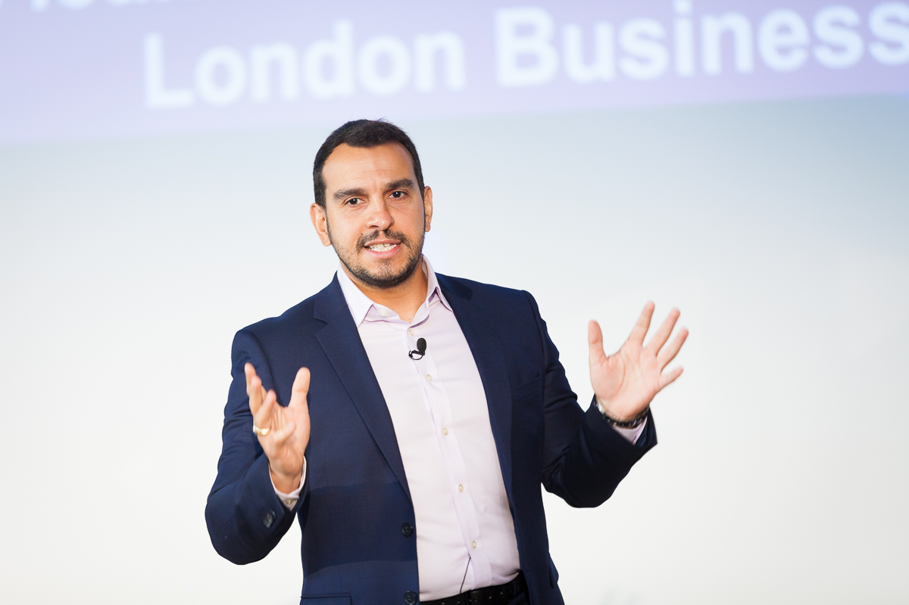

Keynotes, executive education, and strategic advisory
As a sought-after speaker, I deliver keynote addresses and participate in panel discussions at leading conferences, corporate events, and academic forums around the world. My presentations combine rigorous research insights with practical implications for business leaders navigating the sustainability transition.
I am exclusively represented by Stellant (formerly Stern Speakers & Advisors) for speaking and advisory engagements.
Book Through Stellant
How to integrate sustainability into core business strategy for competitive advantage and long-term value creation.
The relationship between sustainability performance and financial markets, and what it means for corporate leaders and investors.
Redesigning economic systems so that market incentives support rather than undermine sustainable development.
Building authentic sustainability credentials and avoiding the reputational risks of perceived greenwashing.
Understanding strategic advantages that current markets fail to reward—and how to unlock their value.
Navigating the sustainability counter-revolution and thriving in an increasingly polarized landscape.